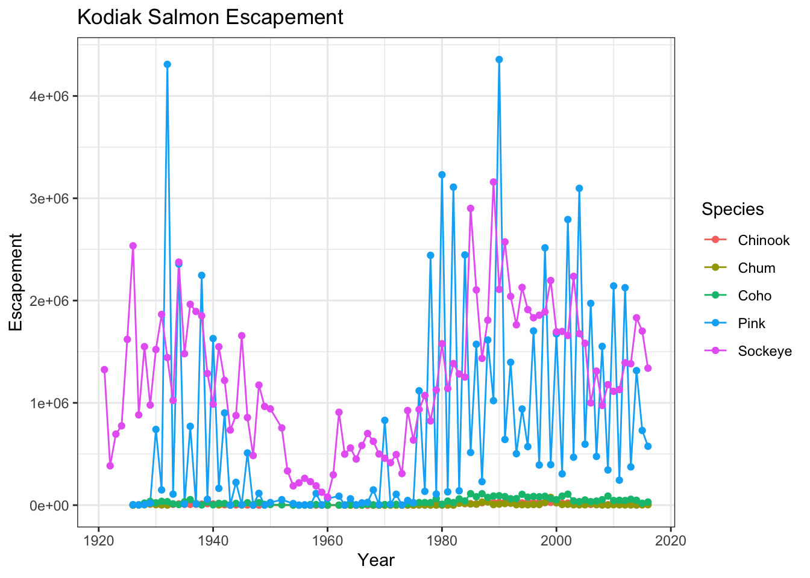

13 Data visualization for web-based maps
13.1 Learning Objectives
In this lesson, you will learn:
- How to use RMarkdown to build a web site
- A quick overview of producing nice visualizations in R with
ggplot - How to create interactive maps with
leaflet - Publishing interactive maps using RMarkdown to make a GitHub web site
13.2 Introduction
Sharing your work with others in engaging ways is an important part of the scientific process. So far in this course, we’ve introduced a small set of powerful tools for doing open science:
- R and its many packages
- RStudio
- git
- GitHub
- RMarkdown
RMarkdown, in particular, is amazingly powerful for creating scientific reports but, so far, we haven’t tapped its full potential for sharing our work with others.
In this lesson, we’re going to take an existing GitHub repository and turn it into a beautiful and easy to read web page using the tools listed above.
13.3 A Minimal Example
- In RStudio, create a new file at the top level of your git repository called
index.Rmd. The easiest way to do this is through the RStudio menu. Choose File -> New File -> RMarkdown… This will bring up a dialog box. You should create a “Document” in “HTML” format. These are the default options. - Open
index.Rmd(if it isn’t already open) - Press Knit
- Observe the rendered output
- Notice the new file in the same directory
index.html. This is our RMarkdown file rendered as HTML (a web page)
- Commit your changes (to both index.Rmd and index.html)
- Open your web browser to the GitHub.com page for your repository
Go to Settings > GitHub Pages and turn on GitHub Pages for the
masterbranchNow, the rendered website version of your repo will show up at a special URL.
GitHub Pages follows a convention like this:
https://{username}.github.io/{repository}/ https://mbjones.github.io/arctic-training-repo/Note that it will no longer be at github.com but github.io.
Go to https://{username}.github.io/{repo_name}/ (Note the trailing
/) Observe the awesome rendered output
13.4 A Less Minimal Example
Now that we’ve seen how to create a web page from RMarkdown, let’s create a website that uses some of the cool functionality available to us.
We’ll use the same git repository and RStudio Project as above, but we’ll be adding some files to the repository and modifying index.Rmd.
First, let’s get some data. We’ll re-use the salmon escapement data from the ADF&G OceanAK database:
- Navigate to Escapement Counts (or visit the KNB and search for ‘oceanak’) and copy the Download URL for the
ADFG_firstAttempt_reformatted.csvfile - Download that file into R using
read.csvto make the script portable - Calculate annual escapement by species and region using the
dplyrpackage - Make a bar plot of the annual escapement by species using the
ggplot2package - Display it in an interactive table with the
datatablefunction from theDTpackage - And lastly, let’s make an interactive, Google Maps-like map of the escapement sampling locations.
To do this, we’ll use the leaflet package to create an interactive map with markers for all the sampling locations:
First, let’s load the packages we’ll need:
library(leaflet)
library(dplyr)
library(tidyr)
library(ggplot2)
library(DT)
library(sf)
library(ggmap) # devtools::install_github("dkahle/ggmap")13.4.1 Load salmon escapement data
You can load the data table directly from the KNB Data Repository, if it isn’t already present on your local computer. This technique only downloads the file if you need it.
data_url <- "https://knb.ecoinformatics.org/knb/d1/mn/v2/object/urn%3Auuid%3Af119a05b-bbe7-4aea-93c6-85434dcb1c5e"
esc <- tryCatch(
read.csv("data/escapement.csv", stringsAsFactors = FALSE),
error=function(cond) {
message(paste("Escapement file does not seem to exist, so get it from the KNB."))
esc <- read.csv(url(data_url, method = "libcurl"), stringsAsFactors = FALSE)
return(esc)
}
)
head(esc)## Location SASAP.Region sampleDate Species DailyCount Method
## 1 Akalura Creek Kodiak 1930-05-24 Sockeye 4 Unknown
## 2 Akalura Creek Kodiak 1930-05-25 Sockeye 10 Unknown
## 3 Akalura Creek Kodiak 1930-05-26 Sockeye 0 Unknown
## 4 Akalura Creek Kodiak 1930-05-27 Sockeye 0 Unknown
## 5 Akalura Creek Kodiak 1930-05-28 Sockeye 0 Unknown
## 6 Akalura Creek Kodiak 1930-05-29 Sockeye 0 Unknown
## Latitude Longitude Source
## 1 57.1641 -154.2287 ADFG
## 2 57.1641 -154.2287 ADFG
## 3 57.1641 -154.2287 ADFG
## 4 57.1641 -154.2287 ADFG
## 5 57.1641 -154.2287 ADFG
## 6 57.1641 -154.2287 ADFG13.4.2 Static Plots
Now that we have the data loaded, let’s calculate annual escapement by species and region:
annual_esc <- esc %>%
separate(sampleDate, c("Year", "Month", "Day"), sep = "-") %>%
mutate(Year = as.numeric(Year)) %>%
group_by(Species, SASAP.Region, Year) %>%
summarize(escapement = sum(DailyCount)) %>%
filter(Species %in% c("Chinook", "Sockeye", "Chum", "Coho", "Pink"))
head(annual_esc)## # A tibble: 6 x 4
## # Groups: Species, SASAP.Region [1]
## Species SASAP.Region Year escapement
## <chr> <chr> <dbl> <int>
## 1 Chinook Alaska Peninsula and Aleutian Islands 1974 1092
## 2 Chinook Alaska Peninsula and Aleutian Islands 1975 1917
## 3 Chinook Alaska Peninsula and Aleutian Islands 1976 3045
## 4 Chinook Alaska Peninsula and Aleutian Islands 1977 4844
## 5 Chinook Alaska Peninsula and Aleutian Islands 1978 3901
## 6 Chinook Alaska Peninsula and Aleutian Islands 1979 10463That command used a lot of the dplyr commands that we’ve used, and some that are new.
The separate function is used to divide the sampleDate column up into Year, Month, and Day columns,
and then we use group_by to indicate that we want to calculate our results for
the unique combinations of species, region, and year. We next use summarize
to calculate an escapement value for each of these groups. Finally, we use a filter and the %in% operator to select only the salmon species.
Now, let’s plot our results using ggplot. ggplot uses a mapping aesthetic (set using aes()) and a geometry to create your plot. Additional geometries/aesthetics and theme elements can be added to a ggplot object using +.

What if we want our bars to be blue instad of gray? You might think we could run this:

Why did that happen?
Notice that we tried to set the fill color of the plot inside the mapping aesthetic call. What we have done, behind the scenes, is create a column filled with the word “blue” in our dataframe, and then mapped it to the fill aesthetic, which then chose the default fill color of red.
What we really wanted to do was just change the color of the bars. If we want do do that, we can call the color option in the geom_bar function, outside of the mapping aesthetics function call.
What if we did want to map the color of the bars to a variable, such as region.
ggplot is really powerful because we can easily get this plot to visualize more aspects of our data.
Here is an example of a different aesthetic and geometry mapping we can create with this data. You can also add a title, adjust labels, and include a built in theme.
ggplot(filter(annual_esc, SASAP.Region == "Kodiak"), aes(x = Year, y = escapement, color = Species)) +
geom_line() +
geom_point() +
ylab("Escapement") +
ggtitle("Kodiak Salmon Escapement") +
theme_bw()
Note how I added a filter call in my ggplot function call to only plot data from Kodiak. You can easily create plots like this for every region using facet_wrap
13.4.3 Interactive Maps
Now let’s convert the escapement data into a table of just the unique locations:
And display it as an interactive table:
Then making a leaflet map is (generally) only a couple of lines of code:
The addTiles() function gets a base layer of tiles from OpenStreetMap which is an open alternative to Google Maps.
addMarkers use a bit of an odd syntax in that it looks kind of like ggplot2 code but uses ~ before the column names.
This is similar to how the lm function (and others) work but you’ll have to make sure you type the ~ for your map to work.
You can also use leaflet to import Web Map Service (WMS) tiles. Here is an example that utilizes the General Bathymetric Map of the Oceans (GEBCO) WMS tiles. In this example, we also demonstrate how to create a more simple circle marker.
leaflet(locations) %>%
addWMSTiles("https://www.gebco.net/data_and_products/gebco_web_services/web_map_service/mapserv?",
layers = 'GEBCO_LATEST',
attribution = "Imagery reproduced from the GEBCO_2014 Grid, version 20150318, www.gebco.net") %>%
addCircleMarkers(lng = ~Longitude,
lat = ~Latitude,
popup = ~ Location,
radius = 5,
# set fill properties
fillColor = "salmon",
fillOpacity = 1,
# set stroke properties
stroke = T,
weight = 0.5,
color = "white",
opacity = 1)Leaflet has a ton of functionality that can enable you to create some beautiful, functional maps with relative ease. Here is an example of some we created as part of the SASAP project, created using the same tools we showed you here. This map hopefully gives you an idea of how powerful the combination of RMarkdown and GitHub pages can be.
13.5 Static maps with geom_sf
We can also create a similar static map using ggplot with the geom_sf geometry. To
do so, first we need to transform our locations data frame into an sf object by
providing the coordinate reference system (EPSG:4326 is the CRS for geocoordinates in WGS84).
We also transform the points to EPSG:3857 which is the CRS used for rendering
maps in Google Maps, Stamen, and OpenStreetMap, among others.
locations_sf <- locations %>%
st_as_sf(coords = c("Longitude", "Latitude"), crs = 4326)
locations_sf_3857 <- st_transform(locations_sf, 3857)Next, let’s grab a base map from the Stamen map tile server covering the region of interest.
This includes a fix to transform the bounding box (which starts in EPSSG:326) to also be in the EPSG:3857 CRS,
which is the projection that the map raster is returned in from Stamen.
# Define a function to fix the bbox to be in EPSG:3857
# See https://github.com/dkahle/ggmap/issues/160#issuecomment-397055208
ggmap_bbox_to_3857 <- function(map) {
if (!inherits(map, "ggmap")) stop("map must be a ggmap object")
# Extract the bounding box (in lat/lon) from the ggmap to a numeric vector,
# and set the names to what sf::st_bbox expects:
map_bbox <- setNames(unlist(attr(map, "bb")),
c("ymin", "xmin", "ymax", "xmax"))
# Coonvert the bbox to an sf polygon, transform it to 3857,
# and convert back to a bbox (convoluted, but it works)
bbox_3857 <- st_bbox(st_transform(st_as_sfc(st_bbox(map_bbox, crs = 4326)), 3857))
# Overwrite the bbox of the ggmap object with the transformed coordinates
attr(map, "bb")$ll.lat <- bbox_3857["ymin"]
attr(map, "bb")$ll.lon <- bbox_3857["xmin"]
attr(map, "bb")$ur.lat <- bbox_3857["ymax"]
attr(map, "bb")$ur.lon <- bbox_3857["xmax"]
map
}
bbox <- c(-170, 52, -130, 64) # This is roughly southern Alaska
ak_map <- get_stamenmap(bbox, zoom = 4)
ak_map_3857 <- ggmap_bbox_to_3857(ak_map)Finally, plot both the base raster map with the points overlayed, which is easy now that everything is in the same projection (3857):
13.6 Resources
- Lisa Charlotte Rost. (2018) Why not to use two axes, and what to use instead: The case against dual axis charts